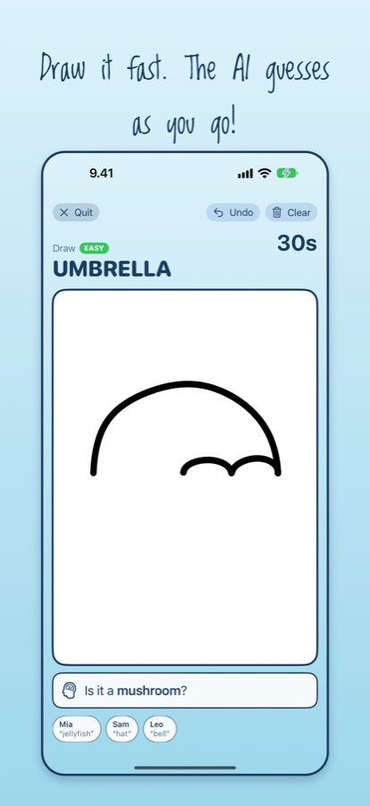
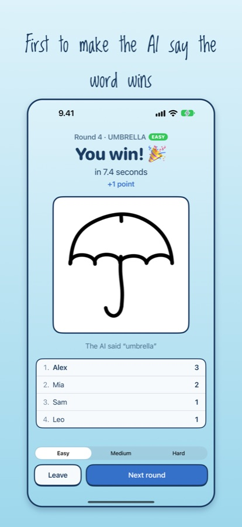

Scribblitz
A drawing race for friends nearby. Everyone draws the same word, and the first to make the AI guess it wins.


How to play
- Everyone opens Scribblitz on their own iPhone or iPad. One player taps Host a game; the others tap Join a game and pick it.
- The host chooses Easy, Medium or Hard words and taps Start round. Everyone gets the same word, and the countdown starts on every device at once.
- Draw! Apple Intelligence on your device looks at your sketch about once a second and says what it thinks it is.
- The first player whose AI says the word wins the round. Harder words score more points.
Want to warm up? Practice solo lets you play on your own.
Requirements
- An iPhone or iPad that supports Apple Intelligence, running iOS 27 or later, with Apple Intelligence turned on.
- For multiplayer, everyone needs to be nearby: on the same Wi-Fi network, or within Wi-Fi range for a direct connection. No accounts or internet connection are needed.
Help
We can't find each other's games
Scribblitz needs permission to use the local network. On each device, open Settings › Privacy & Security › Local Network and make sure Scribblitz is turned on. Also check that everyone is on the same Wi-Fi network and has the latest version of the app.
The home screen says Apple Intelligence isn't available
Make sure your device supports Apple Intelligence and that it's turned on in Settings › Apple Intelligence & Siri. Right after turning it on, Apple Intelligence may need a little while to download before Scribblitz can use it.
The AI won't guess my drawing
Try drawing bigger and bolder, and add the details that make the object recognisable: a handle on an umbrella, ears and whiskers on a cat. The AI only starts guessing once there's enough drawn to recognise.
Contact
Questions, problems or ideas? Email scribblitz.sts@erine.eu.